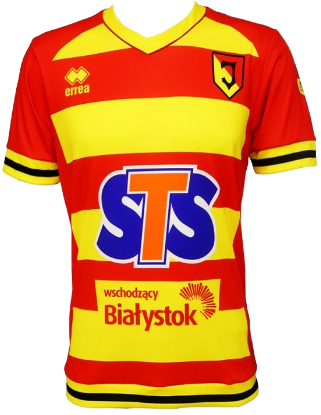
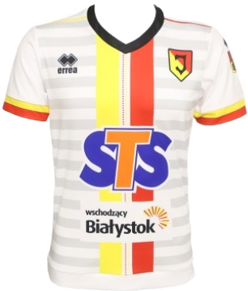
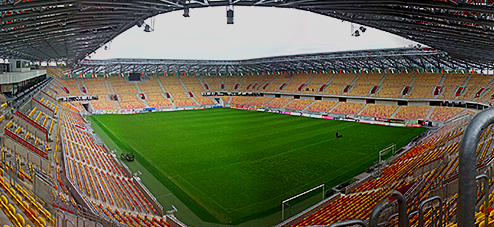

Najnowsze Informacje

JAGIELLONIA BIAŁYSTOK


Informacje o klubie:
- Sportowa Spółka Akcyjna Jagiellonia Białystok
- Data założenia: 27 stycznia 1932
- Adres: Jurowiecka 21, 15-101 Białystok
- Stadion: Stadion Miejski pojemność - 22 432 miejsca
- Prezes: Cezary Kulesza (od 20 stycznia 2010)
- Trener: Ireneusz Mamrot (od 12 czerwca 2017)



Napastnicy
Pomocnicy
Obrońcy
Bramkarze
Fanatics Zone
ZGODY
Brak
KOSY
Arka Gdynia
Lechia Gdańsk
Cracovia
Wisła Kraków
Śląsk Wrocław
Legia Warszawa
Korona Kielce
Stomil Olsztyn
ŁKS Łomża
Wigry Suwałki